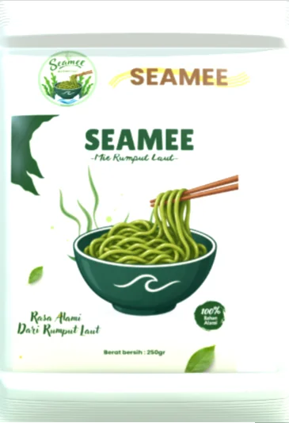

Meet Your New Favorite01 / 04

Mi KeringRumput Laut
SeaMee
Mie Rumput Laut Sambal Matah Khas Bali
SeaMee merupakan mi kering berbasis tepung terigu dan rumput laut bubuk dengan cita rasa sambal matah khas Bali. Perpaduan bahan baku laut dan cita rasa lokal dalam sajian mi yang praktis.
Berat Bersih75 gram
JenisMi kering
RasaSambal matah
Asal RasaBali
Harga per bungkus
Rp13.000
Berat bersih 75 gram
Tombol ini membuka WhatsApp dan menyalin teks pesanan. Pesanan baru dianggap terjadi setelah dikonfirmasi penjual lewat chat.
Tepung terigu protein tinggi, rumput laut bubuk, air, garam, serta bumbu bercita rasa sambal matah.
1. Rebus mi dalam air mendidih hingga teksturnya sesuai selera.
2. Tiriskan mi setelah matang.
3. Tambahkan bumbu sambal matah, lalu aduk hingga merata.
4. Sajikan selagi hangat.
2. Tiriskan mi setelah matang.
3. Tambahkan bumbu sambal matah, lalu aduk hingga merata.
4. Sajikan selagi hangat.
Simpan produk di tempat yang sejuk, kering, bersih, dan terhindar dari sinar matahari langsung. Setelah kemasan dibuka, segera olah produk dan hindari paparan kelembapan.